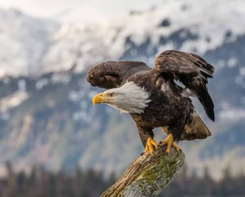
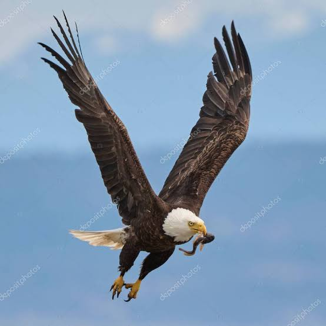

Bu web sitesi, Kel Kartal hakkında gizemli ve büyüleyici dünyasına adım atmak isteyenler için hazırlanmış basit ve anlaşılır bir kaynaktır.
Genellikle büyük su kütlelerinin (göller, nehirler, deniz kıyıları) yakınındaki yüksek ağaçlık alanlarda yuva kurup yaşarlar.
Kel Kartal için temsilî örnek görsel:

Esas olarak balıkla beslenirler; ancak fırsat bulduklarında diğer küçük hayvanları ve avları da başarıyla avlarlar.

Görme yetenekleri insanlara göre çok daha keskindir; gökyüzünden kilometrelerce ötedeki bir balığı bile kolayca fark edebilirler.
Beyaz başı ve kahverengi gövdesiyle bilinen, Kuzey Amerika'ya özgü büyük bir yırtıcı kuştur. Aynı zamanda özgürlük ve gücün sembolüdür.
Turu tamamladın! İlk sayfaya (Hamsiler) geri dönmek için tıklayabilirsin:
Hamsiler Sayfasına Git